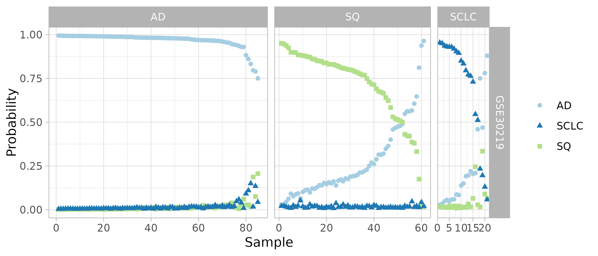

Running a gene expression meta-analysis of lung cancer subtypes
2022-05-18
Source:vignettes/run_example.Rmd
run_example.RmdThis vignette goes through an example of a gene expression meta-analysis according to the method of Hughey and Butte (2015). Running this meta-analysis for the first time requires an internet connection, as some SOFT files must be fetched from GEO.
Before running the meta-analysis, you’ll need to download the data and install the custom cdf packages as described at vignette('prepare_example').
Introduction
The meta-analysis will use data from the following four studies:
Each study contains samples from various lung cancer subtypes. For this meta-analysis, we are going to train a predictive model for classifying a sample as adenocarcinoma (AD), squamous cell carcinoma (SQ), or small-cell lung carcinoma (SCLC), which will identify a set of genes whose expression varies consisently between subtypes across the multiple studies.
Set the parameters for the meta-analysis
Open R and set the working directory to the metapredict_example folder that you previously created. Then we’ll load the necessary packages and set the parameters for the meta-analysis. After running the meta-analysis once, you can change denovo to FALSE. In this example, we’re going to use three studies for cross-validation and the fourth as validation.
library('data.table')
library('metapredict')
library('ggplot2')
library('RColorBrewer')
parentFolderPath = 'expression_data'
expressionDataFile = 'expression_data.rds'
denovo = TRUE
foldidColname = 'study'
className = 'class'
family = 'multinomial'
alpha = 0.9
discoveryStudyNames = c('Bhattacharjee', 'GSE11969', 'GSE29016')
classLevels = c('AD', 'SQ', 'SCLC')Load the study and sample metadata
For this meta-analysis, the files of study metadata and sample metadata have already been created.
studyMetadataPath = system.file('extdata', 'study_metadata.csv', package = 'metapredict')
studyMetadata = fread(studyMetadataPath)
sampleMetadataPath = system.file('extdata', 'sample_metadata.csv', package = 'metapredict')
sampleMetadata = fread(sampleMetadataPath)Load the gene expression data
Now we’ll load the expression data for each study, performing normalization and transformation and mapping probes to genes, where necessary. Running getStudyDataList will take a few minutes.
if (denovo) {
esetList = getStudyDataList(parentFolderPath, studyMetadata)
saveRDS(esetList, file = expressionDataFile)
} else {
esetList = readRDS(expressionDataFile)}
#> Loading study Bhattacharjee...
#> Loading required package: hgu95av2hsentrezgcdf
#> Loading required package: AnnotationDbi
#> Loading required package: stats4
#> Loading required package: BiocGenerics
#>
#> Attaching package: 'BiocGenerics'
#> The following objects are masked from 'package:stats':
#>
#> IQR, mad, sd, var, xtabs
#> The following objects are masked from 'package:base':
#>
#> anyDuplicated, append, as.data.frame, basename, cbind, colnames,
#> dirname, do.call, duplicated, eval, evalq, Filter, Find, get, grep,
#> grepl, intersect, is.unsorted, lapply, Map, mapply, match, mget,
#> order, paste, pmax, pmax.int, pmin, pmin.int, Position, rank,
#> rbind, Reduce, rownames, sapply, setdiff, sort, table, tapply,
#> union, unique, unsplit, which.max, which.min
#> Loading required package: Biobase
#> Welcome to Bioconductor
#>
#> Vignettes contain introductory material; view with
#> 'browseVignettes()'. To cite Bioconductor, see
#> 'citation("Biobase")', and for packages 'citation("pkgname")'.
#> Loading required package: IRanges
#> Loading required package: S4Vectors
#>
#> Attaching package: 'S4Vectors'
#> The following objects are masked from 'package:data.table':
#>
#> first, second
#> The following objects are masked from 'package:base':
#>
#> expand.grid, I, unname
#>
#> Attaching package: 'IRanges'
#> The following object is masked from 'package:data.table':
#>
#> shift
#>
#> Loading study GSE11969...
#> Setting options('download.file.method.GEOquery'='auto')
#> Setting options('GEOquery.inmemory.gpl'=FALSE)
#>
#> Loading study GSE29016...
#> Loading study GSE30219...
#> Loading required package: hgu133plus2hsentrezgcdf
#> Cross-study normalization of discovery datasets
Now we’ll merge the discovery datasets and use ComBat to perform cross-study normalization.
ematList = extractExpressionData(esetList, sampleMetadata)
ematDiscovery = mergeStudyData(ematList[discoveryStudyNames], sampleMetadata)
#> Found3batches
#> Adjusting for0covariate(s) or covariate level(s)
#> Standardizing Data across genes
#> Fitting L/S model and finding priors
#> Finding parametric adjustments
#> Adjusting the DataLeave-one-study-out cross-validation
Before running cross-validation, we’ll use the sample metadata to create the weights and foldid vectors that will be passed to cv.glmnet. metapredictCv returns a list, with one element for each value of alpha. Since we’re doing multinomial classification (AD, SQ, and SCLC), cv.glmnet uses the multinomial deviance as the measure of goodness of fit (the lower the better).
glmnetArgs = makeGlmnetArgs(
sampleMetadata[sampleMetadata$study %in% discoveryStudyNames,],
foldidColname = foldidColname)
cvFitList = metapredictCv(
ematDiscovery, sampleMetadata, yName = className,
weights = glmnetArgs$weights, foldid = glmnetArgs$foldid, alpha = alpha,
family = family, lambda.min.ratio = 0.001, keep = TRUE)
cvFit = cvFitList[[1]]
plot(cvFit)Coefficients of the best model from cross-validation
Let’s look at the coefficients for the best model from cross-validation (ignore the warning about “Stacking not well defined…”). This plot shows which genes are used to predict lung cancer subtype. For example, increased expression of any of three keratins (KRT17, KRT5, KRT6A) increases the probability that a sample is SQ. The number in parentheses next to each gene symbol is the Entrez gene ID.
fitResult = cvFit$glmnet.fit
lambda = cvFit$lambda.min
plotCoefficients(fitResult, lambda, classLevels = classLevels) +
scale_fill_brewer(type = 'qual', palette = 3) +
theme(axis.text.y = element_text(size = 8))
#> Warning: `guides(<scale> = FALSE)` is deprecated. Please use `guides(<scale> =
#> "none")` instead.Expression of selected genes in the discovery set
We can also examine the expression of those selected genes in the merged expression data. In this heatmap, hierarchical clustering is used to determine the order of the genes and the order of the samples within each class.
annoNames = c('study', 'class')
annoLevels = list(discoveryStudyNames, classLevels)
names(annoLevels) = annoNames
annoColors = list(brewer.pal(3, 'Dark2'), brewer.pal(3, 'Paired'))
names(annoColors) = annoNames
names(annoColors[[1]]) = annoLevels[[1]]
names(annoColors[[2]]) = annoLevels[[2]]
plotExpressionHeatmap(
fitResult, lambda, ematDiscovery, sampleMetadata, annoLevels, annoColors,
classLevels = classLevels, fontsize_row = 7)
#> Warning in `[.data.table`(mergeDataTable(colnames(ematMerged),
#> sampleMetadata), : Both 'cols' and '..cols' exist in calling scope. Please
#> remove the '..cols' variable in calling scope for clarity.Predict subtype for samples in the validation dataset
Now we’ll test the model on the last dataset. Internally, metapredict runs mergeStudyData to combine the discovery datasets and the validation dataset, then trains a predictive model on samples from the discovery dataset and predicts the subtype for samples from the validation dataset.
predsList = metapredict(
ematList, studyMetadata, sampleMetadata, discoveryStudyNames, alpha = alpha,
lambda = lambda, weights = glmnetArgs$weights, family = family)
#> Found4batches
#> Adjusting for0covariate(s) or covariate level(s)
#> Standardizing Data across genes
#> Fitting L/S model and finding priors
#> Finding parametric adjustments
#> Adjusting the Data
#> Warning in `[.data.table`(yDTM, , ..className): Both 'className' and
#> '..className' exist in calling scope. Please remove the '..className' variable
#> in calling scope for clarity.Confusion matrix for validation samples
One way to check prediction accuracy of a multinomial classifier is with a confusion matrix. These predictions look pretty good.
calcConfusionValidation(
predsList, lambda = lambda, sampleMetadata = sampleMetadata,
classLevels = classLevels)
#> $GSE30219
#> predictedClass
#> trueClass AD SQ SCLC
#> AD 85 0 0
#> SQ 9 52 0
#> SCLC 4 0 17Class probabilities for validation samples
Instead of looking at the single predicted subtype, we can also look at the probabilities for all four subtypes. Both the confusion matrix and this plot suggest that metapredict can combine data from multiple studies to learn an accurate classifier of lung cancer subtype.
plotClassProbsValidation(
predsList, sampleMetadata, className, classLevels, size = 1.5,
ggplotArgs = list(scale_color_brewer(type = 'qual', palette = 3)))